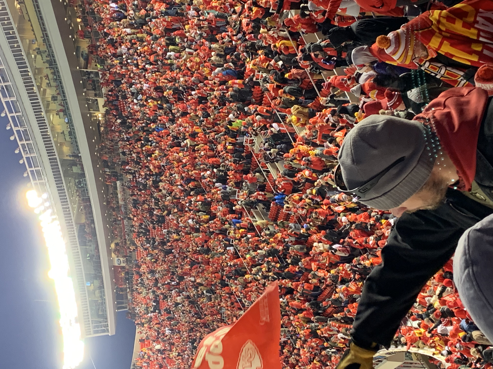
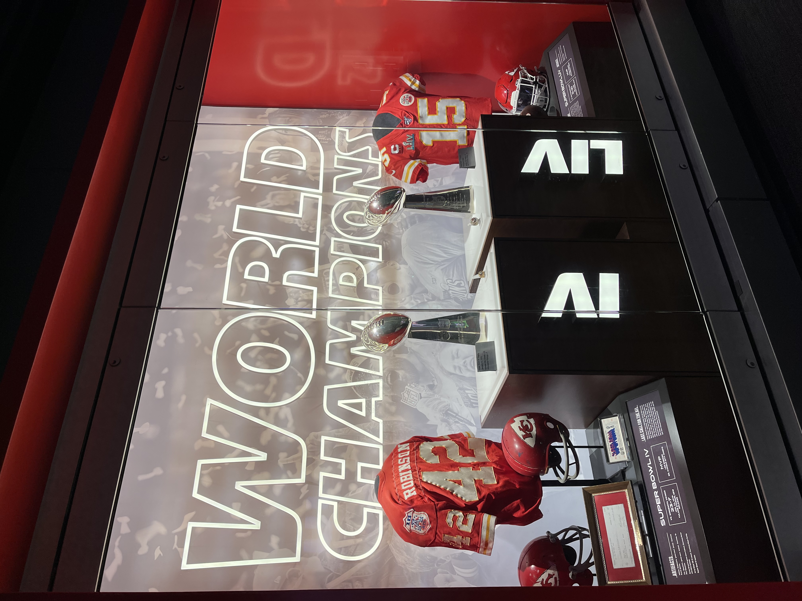

History of the Chiefs
The teams roots are in Dallas. They were known as the Dallas Texans from 1960-1962 and they were part of the AFL. The teams owner and the founder of the AFL later known as the AFC is Lamar hunt. In 1963 He decided to move the team to Kansas City and change the name to the Chiefs after the mayor of Kansas City who was often called Chief. Over the years the team has became tied in and more connected to the Native Americans although the name "Chiefs" does not come from them. The KC Chiefs work to honor the Native Americans. In 1970 the Chiefs won their first superbowl against the Minesota Vikings. In 1972 they moved into Arrowhead Stadium where they have played ever since. They never had much success since 1970, but in early news they have now been to 5 straight AFC Championships, 3 Superbowls, and 2 Superbowl victories.
Owners
The original owner and founder was Lamar Hunt. He was a major factor in the success of the NFL. He was the founder the of AFL (American Football League) which later became the AFC. The AFC championship trophy is named after him. The Current owner of the Chiefs is his son Clark Hunt. Clark Hunt was named the Chairman in 2005. In 2006 his father died and he, his sister, and two brothers inherited ownership of the Chiefs.
Coaches
There have been a total of 13 coaches for the Chiefs. Some of the more notable coaches include Hank Stram who was the first coach who they won their first Superbowl with and is in the Hall of Fame. Marty Schottenheimer who was the coach for about ten years, and the current coach Andy Reid who has taken the chiefs to 5 consectutive AFC championships, 3 Superbowls, and 2 Superbowl victories